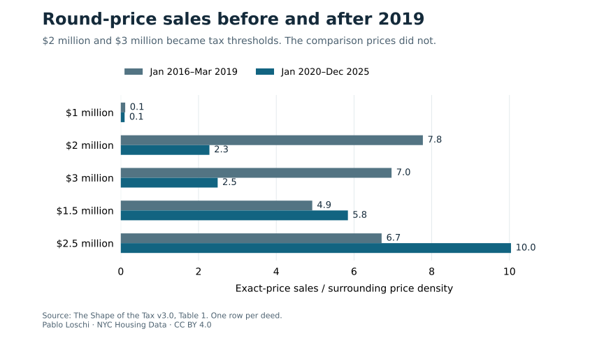
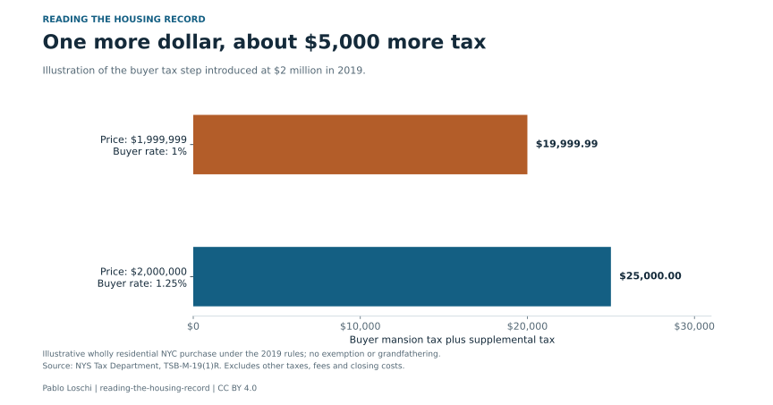

A New York City home priced at $1,999,999 sits one dollar below a costly line. Under the buyer tax rules introduced in 2019, reaching $2 million adds about $5,000 to the bill.
The higher rate applies to the whole purchase price. That is why a one-dollar price change can add thousands in tax.
My analysis of the city's residential sales records finds that transactions shifted toward prices below the new threshold after the reform. Sales recorded at exactly $1,999,999 went from four in January 2016 through March 2019 to 127 in January 2020 through December 2025.
Those periods differ in length. The stronger comparison looks at each exact price relative to the density of sales around it. Before the reform, sales at exactly $2 million were 7.8 times the surrounding density. Afterward, that ratio was 2.3.



Read the chart data as a table
| Price | Before (ratio) | After (ratio) |
|---|---|---|
| $1 million | 0.1 | 0.1 |
| $2 million | 7.8 | 2.3 |
| $3 million | 7.0 | 2.5 |
| $1.5 million | 4.9 | 5.8 |
| $2.5 million | 6.7 | 10.0 |
The cost of crossing the line
For a wholly residential purchase without an exemption, the buyer's mansion tax and supplemental tax total $19,999.99 at a price of $1,999,999. At $2 million, they total $25,000. Other taxes and closing costs sit outside this illustration.
The supplemental tax took effect on July 1, 2019, with a grandfathering rule for certain earlier contracts. The comparison leaves out the transition period and starts the later sample in January 2020.
Buyers and sellers have a reason to settle below the tax line. The records show prices shifting there after the reform, although they cannot reveal what happened in each negotiation.
Interactive illustration · historical 2019 rules
What does the last dollar add?
Under the 2019 rules, the last $1 adds $5,000.01 in buyer tax at this line.
| Schedule | Tax below | Tax at line | Increase |
|---|---|---|---|
| Before 2019 reform | $19,999.99 | $20,000.00 | $0.01 |
| 2019 rules | $19,999.99 | $25,000.00 | $5,000.01 |
Wholly residential NYC conveyance, without exemption or grandfathering. Buyer mansion and supplemental taxes only; seller transfer taxes, mortgage recording tax and other closing costs are excluded. The new schedule applies from 1 July 2019, subject to the rule for qualifying contracts made on or before 1 April 2019. This explains the historical thresholds studied in the paper; it is not a current closing-cost quote. Source: NYS Tax Department, TSB-M-19(1)R. Amounts are rounded to cents.
Original $2 million graphic and downloads



Read the chart data as a table
| Sale price | Buyer rate (%) | Buyer tax ($) |
|---|---|---|
| 1,999,999 | 1 | 19,999.99 |
| 2,000,000 | 1.25 | 25,000 |
What happened at other round prices?
Round prices attract transactions even without a tax threshold. Before 2019, exactly $2 million and exactly $3 million were prominent price points. The reform made both the first dollar of a higher buyer-tax tier.
The spike at $3 million also fell, from 7.0 times the surrounding density to 2.5. Nearby round prices that did not become thresholds behaved differently. The ratio at $1.5 million rose from 4.9 to 5.8, and the ratio at $2.5 million rose from 6.7 to 10.0.
The $1 million threshold, which already existed, provides another comparison: its ratio stayed at about 0.1 in both periods. These comparisons help separate the response at new tax lines from changes in round-number pricing more generally.
The paper also compares years around the reform and examines houses and condominiums separately. The response begins with the reform and remains when foreclosure and lender transfers are removed. Those checks make the timing more persuasive, although they do not turn the exercise into a randomized experiment.
Who still pays for the extra dollar?
Across the new $2 million, $3 million and $5 million lines, the share of sales recorded at the exact price fell by about 60% after the reform, while sales just below increased. Transactions still recorded at the threshold face a buyer-tax jump of about $5,000 to $37,500 compared with a price one dollar lower. These are changes in the price distribution, not individual deals followed through a negotiation.
The estimated reduction in exact-price sales is smaller where a company sells: about 40%, against 67% for other sellers in the corrected linked sample. Company sellers include developers. The records do not establish whether the difference reflects contracts, advice or other features of those transactions.
Reading a comparable near $2 million
A sale recorded just below the line may reflect a response to the tax step. Someone valuing a nearby home still needs the property details and the terms of the transaction. These records cannot say whether a particular deal reached that amount through a price negotiation, a credit or another arrangement.
I would welcome accounts from appraisers, brokers and buyers who have dealt with this boundary. Write to me about what happened at the table; identifying details need not be included.
An extra tax for buyers who need a mortgage
House and condo buyers who borrow face a separate mortgage recording charge. Applying the standard borrower schedule to recorded loans gives gross charges averaging 1.41% of purchase price for houses and 1.28% for condominiums in the paper’s financed sample, before credits, exemptions and consolidation adjustments. These are calculated charges, not observed payments. Co-op share loans fall outside this illustration.
Read the mortgage-tax story and compare a cash purchase with a $720,000 loan. The statutory difference raises a fairness question; the study does not identify who ultimately bears the cost.
What a different tax schedule would change
For the city, the money at stake is small. The sales that moved avoid about $1.6 million to $2.9 million a year in tax, under 1% of the $296 million a year the 2019 schedule implies. That count treats the extra sales below each line as deals moved from just above it.
The jumps exist because each rate applies to the whole price. A slice schedule, which charges each rate only on the part of the price above a line, has no one-dollar cliff, and the paper shows two that raise the same $296 million from the same sales. One keeps the progressive shape of today’s steps, and 7% of sales would pay more under it. England’s stamp duty changed to marginal brackets in December 2014. The study holds prices fixed for these figures and does not predict how buyers would respond, or who would bear the cost.
Sources and methods
This article explains Pablo Loschi’s own research in The Shape of the Tax, v3.5 (PDF). The exact-price chart is unchanged; the company-seller comparison uses the corrected condominium links in dataset v1.2.0. The chart shows observed exact-price density ratios, not individual transactions followed across the reform. The paper page provides the corrected replication download. Updated 22 October 2026.
Earlier replication package (v3.0).
The tax illustration uses the NYS Tax Department’s June 2019 memorandum, TSB-M-19(1)R. It illustrates the historical buyer tax step, not all closing costs.
New article text and original graphics: CC BY 4.0. Credit Pablo Loschi, NYC Housing Data; retain the source and sample, and identify edits. Underlying research releases retain their own terms.